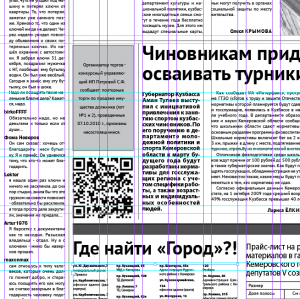

На правах владельца телефона LG P500 Optimus One с ОС Андроид на борту и установленным на него QR-ридера, а также на правах редактора бесплатной информационной газеты «Город» поставил в сегодняшний номер нечто необычное QR-код.

QR-коды, пришедшие к нам из Японии широко используются азиатскими компаниями, пока не широко используются компаниями европейскими, еще уже российскими. Кемеровские компании использующие QR-кодирование мною пока замечены не были.
QR-код сегодня можно прочесть большинством смартфонов и коммуникаторов. Существуют решения и для ПК, оснащенных веб-камерами, но область их применения все-таки мобильные устройства.
В одном таком квадрате может быть зашифровано до 4296 кириллических символов.
Чтобы создать QR-код можно воспользоваться например этим сайтом или просто воспользоваться API от Google, отправив подобный GET-запрос
http://chart.apis.google.com/chart?cht=qr&chs=300x300&chl=http://shipachev.com
В будущем, думаю практику публикации кодов в газете «Город» продолжим, будем шифровать, что-нибудь интересное и необычное. А для того чтобы отследить надо вообще это или нет со следующего номера добавлю к ссылке в коде какую-нибудь переменную для учета.
Есть ли долгое будущее у двумерного шифрования пока неизвестно. В затылок ему дышат RFID-чипы, но стоимость решений на их основе пока несоизмеримо выше.